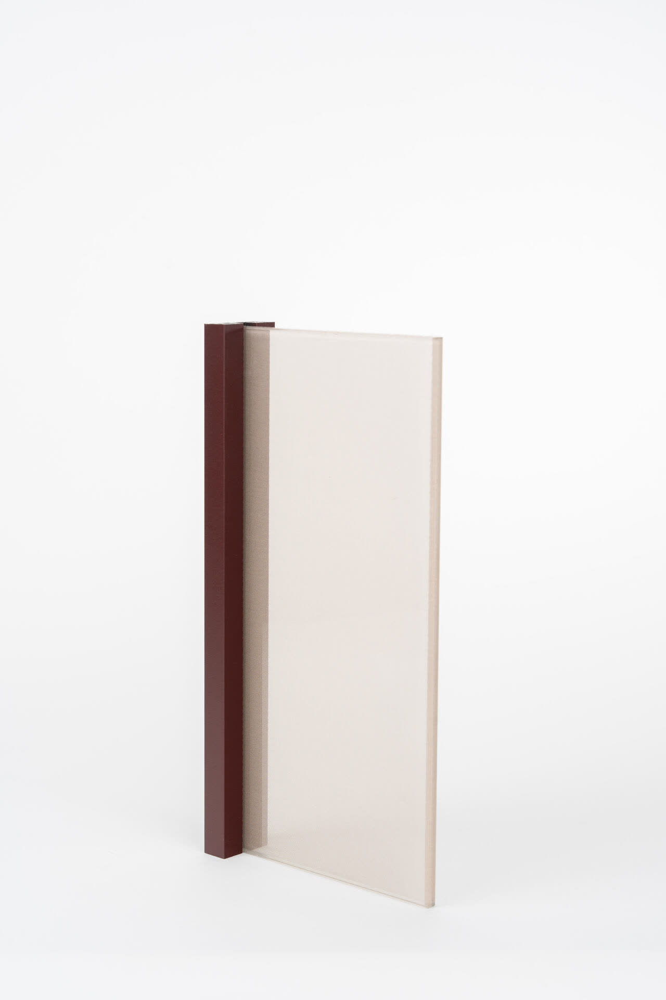

Pernia Glass
Sistemas de vidrio arquitectónico fabricados en Panamá con estándar internacional. Combinamos la precisión del diseño italiano con la eficiencia de la producción local para ofrecer soluciones de alta gama a precios competitivos.
Nuestra Misión
Democratizar el acceso a sistemas de vidrio arquitectónico de alta gama en la región. Creemos que cada proyecto merece soluciones de vidrio que combinen estética, funcionalidad y durabilidad, sin comprometer la calidad por el precio.
Experiencia
Con más de una década de experiencia en procesamiento de vidrio, nuestro fundador Guillermo Pernia ha desarrollado un proceso de fabricación que permite replicar la calidad de los sistemas europeos -- perfiles de aluminio anodizado de alta precisión, rieles con rodamientos de acero inoxidable y vidrio templado certificado -- con tiempos de entrega competitivos y soporte técnico local.

Respaldados por Glass Lab
Glass Lab es nuestro laboratorio experimental de vidrio -- donde se investigan nuevas composiciones, texturas y acabados. Esta innovación alimenta directamente los sistemas Pernia Glass, ofreciendo a nuestros clientes acceso a vidrios decorativos y funcionales únicos en el mercado centroamericano.
Certificaciones y Garantía
Control de Calidad
Inspección visual y dimensional en cada unidad producida. Pruebas de resistencia ASTM C1048.
Materiales Certificados
Aluminio 6063-T5 con anodizado clase AA25. Vidrio templado EN 12150 y laminado EN 14449.
Garantía Estructural
10 años de garantía en perfilería y herrajes. 5 años en vidrio templado. Soporte técnico continuo.
Capacidad Productiva
Vidrio hasta 3.100 x 2.150mm. Horno de templado y laminación propia. Entrega en 15-20 días hábiles.
Trabajemos juntos
Cuéntenos sobre su proyecto y encontraremos la solución ideal en vidrio arquitectónico.